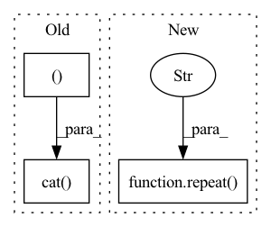

Pattern ID :1987
Before Change
def forward(self, n, device):
t = torch.arange(n, device = device).type_as(self.inv_freq)
sinusoid_inp = einsum("i , j -> i j", t, self.inv_freq)
emb = torch.cat( (sinusoid_inp.sin(), sinusoid_inp.cos() ), dim=-1)
return rearrange(emb, "i j -> () i j")
class AxialRotaryEmbedding(nn.Module):
def __init__(self, dim, max_freq = 10):After Change
def forward(self, n, device):
seq = torch.arange(n, device = device).type_as(self.inv_freq)
freqs = einsum("i , j -> i j", seq, self.inv_freq)
freqs = repeat( freqs, "i j -> () i (j r)" , r = 2)
return [freqs.sin(), freqs.cos()]
class AxialRotaryEmbedding(nn.Module):
def __init__(self, dim, max_freq = 10):In pattern: SUPERPATTERN
Frequency: 4
Non-data size: 3
Instances Fragment ID: 13676454
Project Name: lucidrains/alphafold2
Commit Name: 9be6fd958ff5432932845aa3f1f9a23f4b203199
Time: 2021-04-27
Author: lucidrains@gmail.com
File Name: alphafold2_pytorch/rotary.py
M Class Name: FixedPositionalEmbedding
N Class Name: FixedPositionalEmbedding
M Method Name: forward(3)
N Method Name: forward(3)
M Parent Class: nn.Module
N Parent Class: nn.Module
M File Name: alphafold2_pytorch/rotary.py
N File Name: alphafold2_pytorch/rotary.py
M Start Line: 42
M End Line: 44
N Start Line: 43
N End Line: 45
Before Change
def forward(self, t):
freqs = t[..., None].float() * self.inv_freq[None, :]
emb = torch.cat( (freqs, freqs ), dim = -1)
return emb
def rotate_half(x):
x = rearrange(x, "... (j d) m -> ... j d m", j = 2)After Change
def forward(self, t):
freqs = t[..., None].float() * self.inv_freq[None, :]
return repeat( freqs, "... d -> ... (d r)" , r = 2)
def rotate_half(x):
x = rearrange(x, "... (d j) m -> ... d j m", j = 2)
x1, x2 = x.unbind(dim = -2) Fragment ID: 13676455
Project Name: lucidrains/se3-transformer-pytorch
Commit Name: d73d49946156b5a0d5a7b1314d6ed9238349f087
Time: 2021-05-13
Author: lucidrains@gmail.com
File Name: se3_transformer_pytorch/rotary.py
M Class Name: SinusoidalEmbeddings
N Class Name: SinusoidalEmbeddings
M Method Name: forward(2)
N Method Name: forward(2)
M Parent Class: nn.Module
N Parent Class: nn.Module
M File Name: se3_transformer_pytorch/rotary.py
N File Name: se3_transformer_pytorch/rotary.py
M Start Line: 12
M End Line: 14
N Start Line: 12
N End Line: 13
Before Change
def forward(self, seq_len):
pos = torch.arange(seq_len, dtype=self.inv_freq.dtype, device=self.inv_freq.device)
pos_enc = torch.outer(pos, self.inv_freq)
return torch.cat( (pos_enc, pos_enc ), dim=-1)
class FourierPositionEncoding(nn.Module):
def __init__(self, input_shape: Tuple[int, ...], num_frequency_bands: int):After Change
// outer product of positions and inverse frequencies
pos_enc = torch.einsum("p, f -> p f", pos, self.inv_freq)
// for a single position p: [pf_1, pf_2, ..., pf_dim/2] -> [pf_1, pf1, pf_2, pf_2..., pf_dim/2, pf_dim/2]
pos_enc = repeat( pos_enc, "... pf -> ... (pf r)" , r=2)
// pos_enc.shape == (seq_len, dim)
return pos_enc
Fragment ID: 13676456
Project Name: krasserm/perceiver-io
Commit Name: 93ff585454f4cc636112d9887a55633044edd3c1
Time: 2022-12-11
Author: krasserm@googlemail.com
File Name: perceiver/model/core/position.py
M Class Name: FrequencyPositionEncoding
N Class Name: FrequencyPositionEncoding
M Method Name: forward(2)
N Method Name: forward(2)
M Parent Class: nn.Module
N Parent Class: nn.Module
M File Name: perceiver/model/core/position.py
N File Name: perceiver/model/core/position.py
M Start Line: 48
M End Line: 49
N Start Line: 59
N End Line: 63
Before Change
q = repeat(q, "b h i d -> b h i n d", n = j)
edge_input = torch.cat( (q, k, rel_dist ), dim = -1)
if exists(edges):
if exists(nbhd_indices):
edges = batched_index_select(edges, nbhd_indices, dim = 2)After Change
rel_coors = batched_index_select(rel_coors, nbhd_indices, dim = 2)
else:
k = repeat(k, "b h j d -> b h n j d", n = n)
v = repeat( v, "b h j d -> b h n j d" , n = n)
rel_dist_pos_emb = self.to_pos_emb(rel_dist)
// inject position into values Fragment ID: 13676457
Project Name: lucidrains/en-transformer
Commit Name: a8449dd45f8b7b872705db7a4053d3470ee4739b
Time: 2021-03-27
Author: lucidrains@gmail.com
File Name: en_transformer/en_transformer.py
M Class Name: EquivariantAttention
N Class Name: EquivariantAttention
M Method Name: forward(5)
N Method Name: forward(5)
M Parent Class: nn.Module
N Parent Class: nn.Module
M File Name: en_transformer/en_transformer.py
N File Name: en_transformer/en_transformer.py
M Start Line: 164
M End Line: 254
N Start Line: 177
N End Line: 256